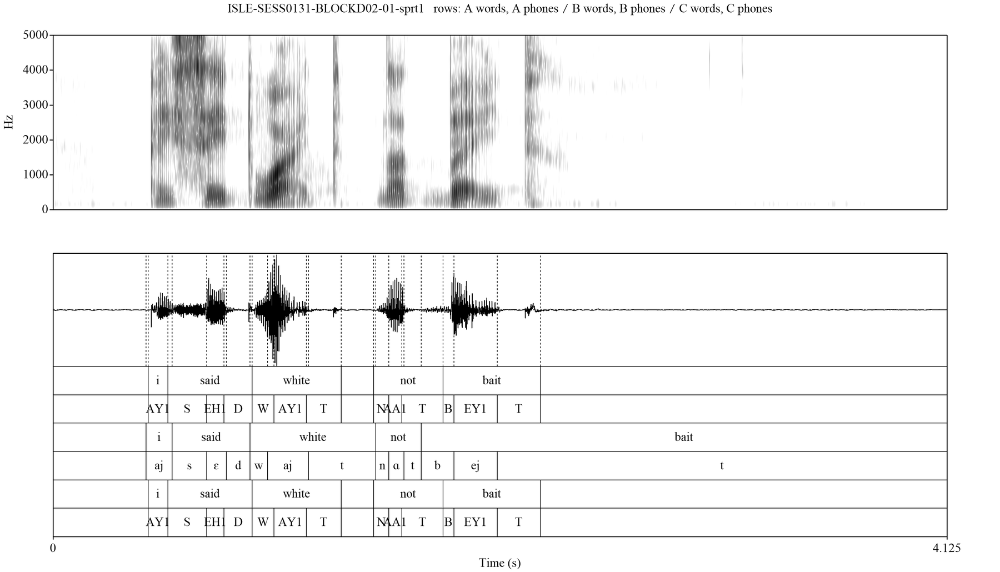
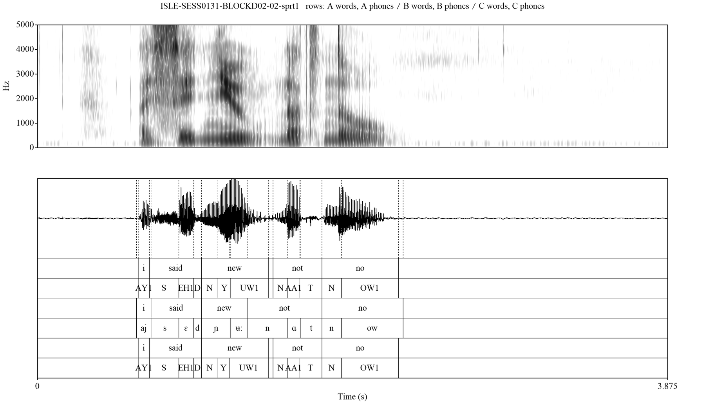
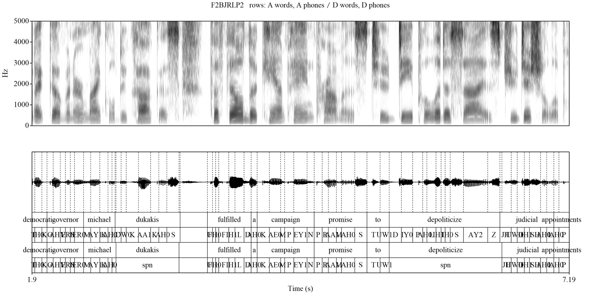
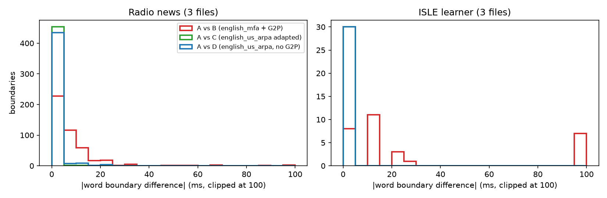
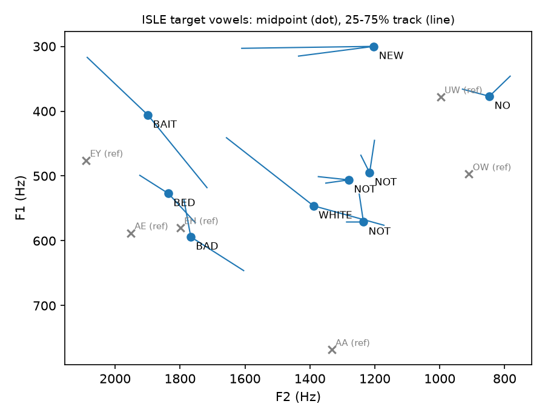
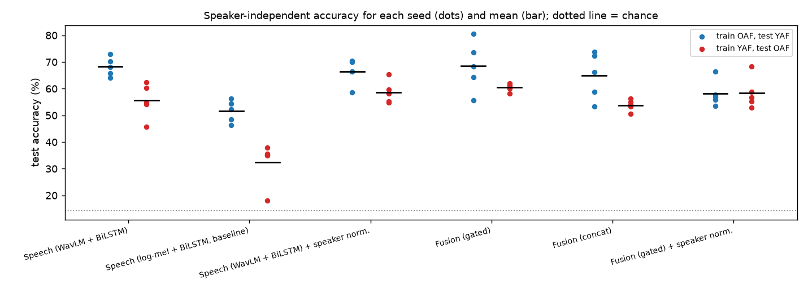
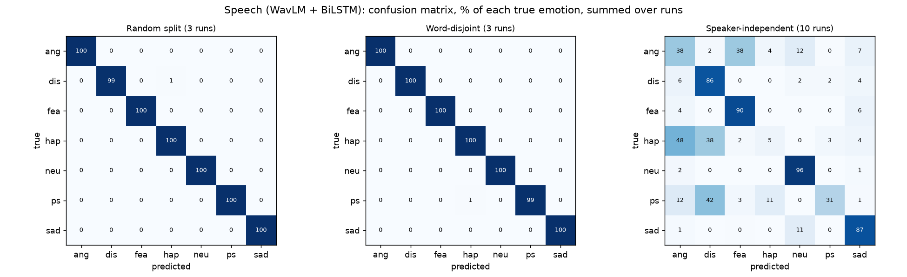
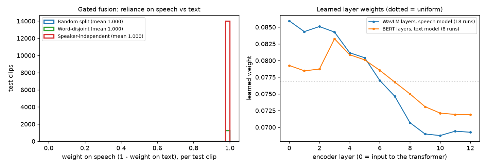
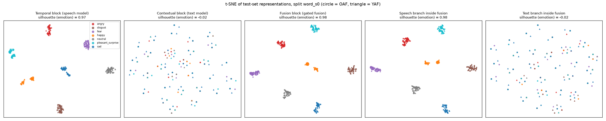
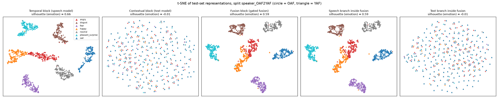

Part A. I aligned the six provided recordings at word and phone level with the Montreal Forced Aligner (MFA 3.4.4). The pipeline runs five alignments: two pretrained acoustic models with their own phone sets, a model adapted to these speakers, a run without the custom dictionary, and a run with MFA's default beam. The custom dictionary covers the out-of-vocabulary words with G2P, and I checked and corrected those entries by hand. On the read news speech the two pretrained models agree closely (92% of word boundaries within 20 ms). On the non-native ISLE prompts they disagree badly at the edges of speech: english_mfa stretches the final stop of an utterance over up to 2.5 s of trailing silence. Speaker adaptation raises the alignment likelihood, most for the learner (about +4 per frame against +0.9 for the newsreader), but moves only 23 of 2,126 phone boundaries. Vowel formants measured inside the aligned intervals show where the learner departs from the target vowels.
Part B. I built speech-only, text-only and fusion emotion classifiers for TESS: frozen WavLM or BERT features, a BiLSTM with attention pooling, and gated or concatenation fusion. I tested them on random, unseen-word and unseen-speaker splits. Speech models reach 99.4–100% on the first two, so those splits cannot separate the models. On an unseen speaker the best speech model drops to 61.9 ± 7.9% (10 runs), and its result depends strongly on the training seed. Text-only stays at chance (14.3%), because every TESS sentence is "Say the word X" in all seven emotions. Accordingly, the learned fusion gate puts all its weight on speech, and fusion does not beat speech-only beyond seed noise. The clearest effect is pretrained features: WavLM beats log-mel by 20 points on all 10 paired runs. Errors on a new speaker are systematic. Each actress expresses some emotions with a different tempo, and the model learns the training speaker's version.
| Files | Content | Speaker | Length |
|---|---|---|---|
F2BJRLP1–3 | Boston University radio news passages | one professional female newsreader | 25–31 s each |
ISLE …BLOCKD02_01–03 | learner prompts: "I said WHITE not BAIT", "NEW not NO", "BAD not BED" | one adult non-native speaker; F0 92–118 Hz in the measured vowels, so most likely male | about 4 s each |
All files are 16 kHz mono and are used unchanged. MFA was installed from conda-forge (it needs the Kaldi and OpenFST binaries) and run on a Kaggle CPU notebook; scripts/run_pipeline.sh runs every step below in one command, and the README lists the individual commands.
MFA matches words to the dictionary literally, so the transcripts were normalised to what was actually spoken. prepare_corpus.py logs every change (data/normalisation_log.csv); there are six:
| File | Before | After | Reason |
|---|---|---|---|
| F2BJRLP1 | S.J.C.'s | S J C's | a dotted initialism is spoken letter by letter |
| F2BJRLP1 | WBUR's | W B U R's | the station name is spoken as letters |
| F2BJRLP2 | seventy- six, seventy- one | seventy six, seventy one | a hyphen followed by a space would otherwise create the non-word "seventy-" |
| F2BJRLP2 | de-politicize | depoliticize | one word; "de" alone would be aligned as a separate word |
| F2BJRLP3 | thirty- five | thirty five | as above |
Other punctuation is removed, and apostrophes inside words are kept, because the dictionaries list possessives such as hennessy's.
With the english_us_arpa dictionary, 4 words are out of vocabulary (OOV): depoliticize, dukakis, maffy, melnicove. The english_us_mfa dictionary has 11 OOVs, because it also lacks some possessives and letter names: c's, r's, hennessy's, state's, year's, judgeships, margo. I generated pronunciations with the matching pretrained G2P model and checked each one; apply_overrides.py then merges the base dictionary, the G2P output and the hand corrections, and rejects any phone that is not in the model's phone set.
| Word | G2P output | Used | Why changed |
|---|---|---|---|
| depoliticize | D EH1 P AH0 L AY1 T AH0 S AY2 Z | D IY0 P AH0 L IH1 T IH0 S AY2 Z | G2P produced "DEP-uh-LIGHT-uh-size": the wrong first vowel, a diphthong in the stem and the wrong stress. The prefix is /di/ and the stem follows politics. |
| dukakis | D UW1 K AA1 K IH0 S | D UW0 K AA1 K AH0 S | Two primary stresses; the name is du-KAH-kis, stressed on the second syllable only. |
| c's, r's (MFA set) | kʰ z, ɹ z | pronunciations of seas, are + z | G2P read the letters as sounds; they are the letter names "see" and "ar" plus the possessive. |
The other G2P entries were accepted (for example maffy M AE1 F IY0, melnicove M EH1 L N IH0 K OW2 V). One accepted entry is wrong and I found it only while writing this report: state's → s t ej t z in the MFA set should end in /s/, since the possessive is voiceless after /t/. It affects one sibilant in one run (B).
A quirk worth recording: mfa validate reports "19 OOV word types, 43 tokens" for the ARPA setup, but its own list of OOVs found contains only the 4 words above. The larger count includes single letters (the spelled-out initials), which are in the dictionary. This is a counting bug in MFA 3.4.4's validator, not a dictionary problem.
| Run | Acoustic model | Dictionary | Question it answers |
|---|---|---|---|
| A_arpa | english_us_arpa | ARPA + checked G2P | main alignment |
| B_mfa | english_mfa | MFA (IPA-like) + checked G2P | does a second model with a different phone set agree? |
| C_adapted | A adapted to these speakers (mfa adapt) | as A | does speaker adaptation move boundaries? |
| D_no_g2p | english_us_arpa | base dictionary only | what happens to OOV words without G2P? |
| A_default_beam | as A | as A | are the wider beams (--beam 100 --retry_beam 400) needed? |
Run C uses a workaround. mfa adapt --output_directory wrote the alignment made before adaptation (its log says "Alignment already done, skipping"). So the pipeline saves the adapted model and then aligns again with it. All five runs aligned all six files.
The figures are drawn by Praat from scripts (make_figures.py): a spectrogram (0–5 kHz) above the waveform, with the word and phone tiers of several runs stacked underneath. The merged TextGrids are in outputs/comparison/ and can be opened in Praat.


N Y UW1, B: ɲ ʉː), matching the falling F2 at the start of the vowel.
spn with no phones inside, but the surrounding words keep their boundaries.Word boundaries of each run were matched to run A (word sequences aligned with difflib), and the absolute time differences were measured (outputs/analysis/agreement.csv):
| Comparison | Files | Boundaries | Mean |Δ| ms | Median | Max | ≤ 20 ms | ≤ 50 ms |
|---|---|---|---|---|---|---|---|
| A vs B (other model) | news | 456 | 8.2 | 10 | 250 | 91.9% | 97.6% |
| A vs B | ISLE | 30 | 172.8 | 10 | 2460 | 63.3% | 76.7% |
| A vs C (adapted) | news | 456 | 0.1 | 0 | 10 | 100% | 100% |
| A vs C | ISLE | 30 | 0.0 | 0 | 0 | 100% | 100% |
| A vs D (no G2P) | news | 456 | 0.6 | 0 | 20 | 99.1% | 100% |
| A vs default beam | news | 456 | 0.1 | 0 | 10 | 100% | 100% |
| A vs default beam | ISLE | 30 | 2.3 | 0 | 50 | 93.3% | 100% |

english_mfa is trained on more varied data in which stop closures and low-level noise look alike; the trailing silence here contains faint noise rather than digital silence. Either way, sentence-final boundaries from B need checking on this kind of data.spn, and the damage stays local. Run D labels the five OOV tokens (dukakis ×2, melnicove, depoliticize, maffy) as unknown speech. The word boundaries around them still match A (99.1% within 20 ms, maximum 20 ms), but the phone-level information inside those words is lost (1,031 phones against 1,063 in A). So G2P mattered for phone analysis, not for word timing.I measured F1 and F2 (Praat, Burg method, maximum 5 kHz) at 25%, 50% and 75% of each target vowel as aligned by run A, plus mean F0. This uses the alignment for what it is usually needed for: finding the segments to measure. The reference crosses are the average US English male vowels of Hillenbrand et al. (1995). They show only the rough target region, since each vowel here is a single token.

| Word (vowel) | Duration | F1 / F2 at midpoint (Hz) | Observation |
|---|---|---|---|
| BAIT (EY) | 200 ms | 406 / 1899 | a clear diphthong: F1 falls 518 → 317 and F2 rises 1717 → 2086 |
| WHITE (AY) | 150 ms | 546 / 1389 | also a diphthong (F2 1172 → 1657), but its start is less open than a US /aɪ/ |
| BAD (AE) vs BED (EH) | 220 / 180 ms | 594 / 1767 vs 527 / 1836 | the contrast is there but small: BAD is 67 Hz more open, 69 Hz further back and 40 ms longer |
| NOT (AA), 3 tokens | 60–70 ms | F1 495–571, F2 1216–1280 | short and much less open than US /ɑ/ (F1 about 770): closer to a short rounded [ɒ]/[ɔ] |
| NEW (UW) | 230 ms | 300 / 1203 | F2 well above the back /u/ reference: a fronted [ʉ] |
| NO (OW) | 350 ms | 377 / 847 | high and back, with little glide: closer to [o] or [u] than to a US /oʊ/ |
Caveats: each word is one token from one speaker; the formant tracker can be pulled by neighbouring consonants in a 60 ms vowel; and the US reference is not the learner's target accent. The point is that the alignment is good enough to measure from, and that the measurements are consistent with the contrasts the prompts test (BAD/BED, NOT/NO).
TESS has two actresses (OAF, aged 64; YAF, aged 26), each saying "Say the word X" for the same 200 words in seven emotions. Before modelling, I audited the Kaggle copy (scripts/audit_tess.py):
OAF_food_fear, present twice), so everything is resampled to 16 kHz.OA_bite_neutral.wav), so speaker and emotion are read from the folder.| Split | Held out | Train / val / test | Repeats |
|---|---|---|---|
| Random | 15% of clips, stratified by speaker × emotion | 1960 / 420 / 420 | 3 different splits |
| Word-disjoint | 30 test words never seen in training, in any emotion | 1960 / 420 / 420 | 3 different splits |
| Speaker-independent | the other actress; validation is 15% of the training speaker's words | 1190 / 210 / 1400 | both directions × 5 seeds |
The random split is what most TESS results report, but there the same actress saying the same word in other emotions is in the training data. The word split rules out memorising words, and the speaker split asks whether emotion is recognised in an unfamiliar voice. That split turned out to be the only informative one, and its results vary between training runs, so it was repeated with 5 seeds.
| Block | Choice | Reason |
|---|---|---|
| Preprocessing | Speech: mono, 16 kHz, silence trimmed (30 dB below peak), peak-normalised. Text: lower-cased, BERT WordPiece tokens. | The encoders expect 16 kHz input. Leading and trailing silence carries no emotion and varies between clips; after trimming, the mean clip length per speaker and emotion is 1.5–2.5 s. |
| Feature extraction | Frozen WavLM Base+: a learned softmax-weighted sum of all 13 hidden layers (768-d, 50 frames/s). Baseline: 80-band log-mel spectrogram. Text: frozen BERT-base-uncased, also a weighted sum of 13 layers. | 2,800 clips are too few to fine-tune a 95-million-parameter encoder without overfitting to two voices. Different layers of self-supervised models encode different information (lower layers acoustics and prosody, upper layers phonetic content), so the model learns which to use rather than me guessing one layer. Log-mel tests whether pretraining matters. |
| Temporal / contextual modelling | LayerNorm → linear 256 + GELU → BiLSTM (2 layers over speech frames; 1 layer over text tokens) → attention pooling to one 256-d vector per clip. | Emotion is carried by the pitch contour, energy and rhythm across the whole utterance, so the model needs context in both directions. Attention pooling can weight the emotionally loaded target word more than the fixed carrier phrase. The 256-d pooled vector is the representation shown in the t-SNE plots. |
| Fusion | Gated: g = softmax(W[h_s; h_t]) gives two weights per clip, and the fused vector is g_s·h_s + g_t·h_t. Concat: GELU(W[h_s; h_t]). | The gate makes the fusion inspectable: it shows per clip how much the model relies on each modality. Concatenation is the standard comparison and can, in principle, learn interactions between the two. |
| Classifier | MLP 256 → 128 → 7, dropout 0.3 | A small head; the representation does the work. |
Training: AdamW (learning rate 1e-3, weight decay 1e-2), batch 32, cross-entropy, gradient clipping at 1.0, up to 40 epochs. The checkpoint with the best validation macro-F1 is kept (patience 8). The encoders are frozen, so features are extracted once (2.5 min on a T4 GPU), and all 100 training runs took about 90 minutes. Training is deterministic: seed 0 of the repeated speaker runs reproduced the first run exactly.
One addition targets the unseen-speaker problem: per-speaker normalisation. Each speech feature is z-scored with the mean and standard deviation of all frames from the same speaker. It uses no emotion labels, but it does use the new speaker's unlabelled recordings, so in deployment some audio from a speaker is needed before predicting.
| Model (accuracy %, mean ± std, n runs) | Random | Unseen words | Unseen speaker |
|---|---|---|---|
| Speech: WavLM + BiLSTM | 99.9 ± 0.1 (3) | 99.9 ± 0.1 (3) | 61.9 ± 7.9 (10) |
| Speech: log-mel + BiLSTM (baseline) | 99.5 ± 0.0 (3) | 99.6 ± 0.2 (3) | 41.9 ± 11.2 (10) |
| Speech: WavLM + speaker normalisation | – | – | 62.5 ± 5.6 (10) |
| Text: BERT + BiLSTM | 12.0 ± 2.2 (3) | 14.3 ± 0.0 (3) | 14.3 ± 0.0 (2) |
| Fusion: gated | 100.0 ± 0.0 (3) | 99.9 ± 0.1 (3) | 64.5 ± 7.2 (10) |
| Fusion: concat | 99.8 ± 0.2 (3) | 99.4 ± 0.4 (3) | 59.3 ± 7.9 (10) |
| Fusion: gated + speaker normalisation | – | – | 58.3 ± 4.9 (10) |
Macro-F1 tables are in Results/accuracy_table_macro_f1.md; they rank the models the same way. Because the speaker-split numbers vary so much between seeds, I compared models on the same split and seed (table below): this pairs away the variation that comes from the split itself.
| Unseen speaker: A minus B, same split and seed | Accuracy difference (points) | A better in | Range |
|---|---|---|---|
| WavLM vs log-mel | +19.9 ± 8.2 | 10 / 10 | +9.4 to +36.1 |
| Gated fusion vs speech only | +2.6 ± 8.7 | 6 / 10 | −12.4 to +16.3 |
| Concat fusion vs speech only | −2.5 ± 6.7 | 4 / 10 | −12.4 to +8.1 |
| Speaker normalisation (speech model) | +0.6 ± 6.6 | 7 / 10 | −11.6 to +13.8 |
| Speaker normalisation (gated fusion) | −6.2 ± 9.3 | 2 / 10 | −23.5 to +8.3 |

On random and unseen-word splits every emotion is at F1 0.99–1.00, so the differences show only for an unseen speaker. Speech model (WavLM), per-emotion F1 averaged over the 10 speaker runs:
| angry | disgust | fear | happy | neutral | pleasant surprise | sad |
|---|---|---|---|---|---|---|
| 0.32 | 0.70 | 0.78 | 0.08 | 0.88 | 0.32 | 0.83 |

Easiest: neutral (96% recall), fear (90%), sad (87%), disgust (86%). They transfer between the actresses in both directions: recall is 85–98% for each of them whichever voice the model was trained on. Hardest: happy (5% recall), pleasant surprise (31%) and angry (38%). These do not transfer: the two actresses express them differently. The trimmed clip durations show one measurable difference:
| Mean duration (s) | angry | disgust | fear | happy | neutral | pleasant surprise | sad |
|---|---|---|---|---|---|---|---|
| OAF (older) | 1.48 | 2.31 | 1.54 | 1.97 | 2.01 | 2.00 | 2.52 |
| YAF (younger) | 2.04 | 2.39 | 1.62 | 1.67 | 2.03 | 1.88 | 2.17 |
OAF's angry is short and fast, like both speakers' fear, while YAF's angry is slow. For happy it is the other way round. Trained on YAF and tested on OAF, the model calls 67% of OAF's (fast) angry clips fear. Trained on OAF and tested on YAF, it calls 96% of YAF's (fast) happy clips angry. The model has learned each emotion as the training actress performs it, including her tempo.
On TESS, never, and the model shows why. The gate's weight on speech is 1.000 for every test clip in every split (Figure B3, left). Gated fusion has learned to ignore the text completely, which is the correct behaviour for an uninformative modality. Its differences from speech-only therefore come from training a new speech branch. Across the 10 speaker runs, gated fusion fixed 1,729 clips that speech-only got wrong, but broke 1,367 that speech-only got right: 12% and 10% of the 14,000 predictions, 22% changed in all, for a net gain of 2.6 points. That churn is seed variation, not information from the text. Concat fusion has no explicit gate for switching the text off (it would have to learn near-zero weights for it), and it does slightly worse (−2.5 points, 4 of 10).

Fusion helps when the two modalities carry complementary evidence: the words carry sentiment ("I can't believe you did this") while the voice is ambiguous, or the audio is noisy while the text is clean. This happens in conversational datasets such as IEMOCAP or MELD. The gate would then be expected to move away from 1 on exactly those clips. Here, the right test of a fusion model is that it does not get worse when one modality is useless; the gated model passes that test, and concatenation passes it less well.
| Case | What happens | Why |
|---|---|---|
1. YAF happy → angry (train OAF), e.g. YAF_dab_happy, YAF_dead_happy, YAF_fail_happy | 96% of YAF's happy clips are called angry, and the example clips are wrong in all 5 seeds with confidence 0.999 or higher. | YAF's happy is short, close to OAF's angry (1.67 s against 1.48 s), while OAF's own happy is long (1.97 s). The model's notion of "angry" is OAF's. |
2. OAF angry → fear (train YAF), e.g. OAF_tough_angry, OAF_which_angry | 67% of OAF's angry clips are called fear. | The mirror image of case 1: YAF's angry is long (2.04 s), and the YAF emotions as short as OAF's angry (1.48 s) are fear (1.62 s) and happy (1.67 s). The model chooses fear; both example clips are called fear in all 5 seeds. |
3. OAF happy and pleasant surprise → disgust (train YAF), e.g. OAF_back_happy, OAF_bath_pleasant_surprise | 75% and 79% of these clips are called disgust, mostly with confidence above 0.9. | Duration does not explain this one (OAF happy 1.97 s vs YAF disgust 2.39 s), and I have not measured the cause. Pitch range and voice quality, which change with age, are the next things I would measure; this is a hypothesis, not a finding. |
4. YAF_goal_pleasant_surprise → happy (gated fusion, word split) | The only clip any gated model got wrong on unseen words (confidence 0.80). | Pleasant surprise and happy are the closest pair: both positive and high-arousal. With every other cue equal, these two are the first to merge. |
| 5. Text model, every clip | The same prediction for all 7 emotions of a word; 12–14% accuracy. | The input "say the word goal" is identical across emotions, so the output must be too. This failure is built into the data, not the model. |
t-SNE of the 256-d test representations from the temporal block (speech model), the contextual block (text model) and the fusion block (gated fusion, plus its two branches). The silhouette score measures how well the emotion labels separate the representation: 1 means tight, separate clusters, and 0 means no structure. It is computed with cosine distance on the full 256-d vectors, not on the 2-D projection.


| Representation | Silhouette: unseen words | Silhouette: unseen speaker |
|---|---|---|
| Temporal block (speech model) | 0.974 | 0.665 |
| Contextual block (text model) | −0.017 | −0.005 |
| Fusion block (gated fusion) | 0.979 | 0.587 |
Two further points. In Figure B4 most emotion clusters split into two sub-clusters, one per actress: the representation separates emotion first but still encodes the speaker within each emotion. An unseen voice therefore falls between the learned sub-clusters rather than inside them. Second, the fusion representation equals its speech branch (identical silhouettes), as expected with a gate of 1.